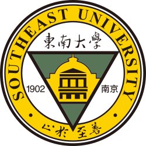
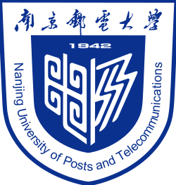

东南大学
2015 - 2018 · 硕士 电路与系统
Experience · NLP · LLM
在 NLP 领域承担或参与过 agent-based 对话系统、垂域 LLM、图文对齐、标题生成、机器翻译等项目，重视深挖问题和持续学习。
Education

2015 - 2018 · 硕士 电路与系统

2011 - 2015 · 本科 电子科学与技术
Work
NLP 算法工程师，参与智能客服大模型后训练、视频 AIGC 生成策略、搜索广告文案 AIGC 等方向。
算法专家，围绕旅游领域 LLM、agent-based 对话机器人、文本/图文 Embedding、标题生成与实体识别等项目持续迭代。
核心技术研究员，参与机器翻译与知识图谱问答系统相关研发。
Projects
参与客服领域大模型强化学习链路与后训练范式探索，重点优化工具调用、沟通解释与安抚能力，让模型在多轮业务场景中更稳定地解决用户问题。
参与搜索广告场景下的文案生成优化、query 影响建模、视频生成策略探索与生产链路构建，关注生成质量、可控性与线上效果。
参与 ToC 端 agent-based 对话机器人构建，覆盖旅游信息问答、产品推荐、行程规划、智能客服与闲聊等需求，负责 agent 框架设计与 RAG 模型训练。
通过增量预训练、指令微调与强化学习等方式，参与构建更适配旅游领域的垂域大模型。
构建旅游领域文本向量和图文对齐模型，支持语义召回、话题匹配、图文检索、图片标签等场景。
负责或参与景点短亮点生成、推荐理由抽取、多语种实体识别、机器翻译与知识图谱问答系统，覆盖生成、匹配、抽取与检索式问答等能力。